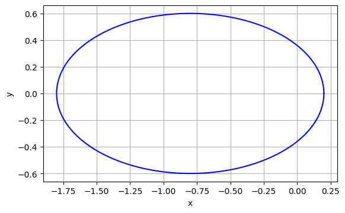
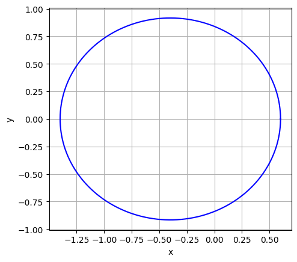
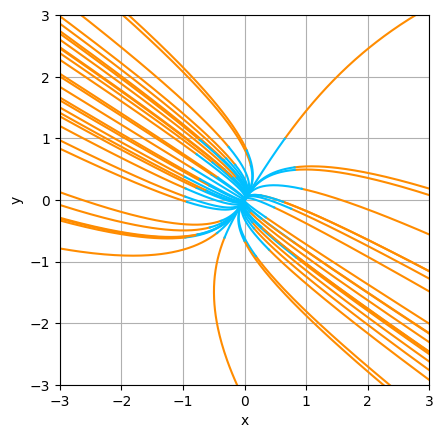
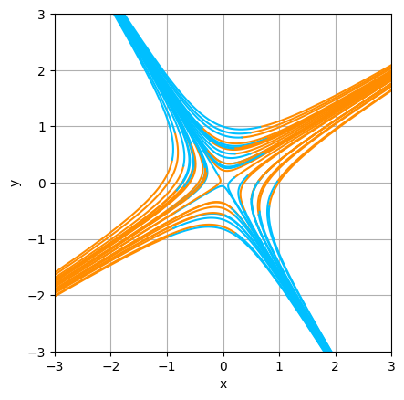
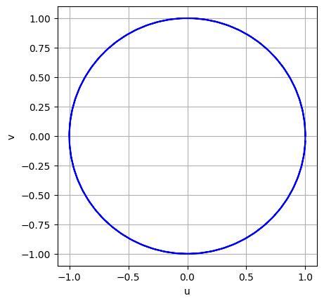
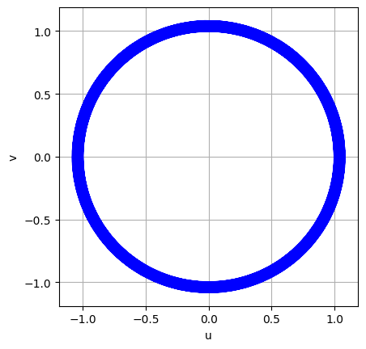
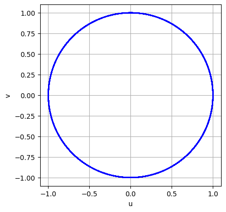
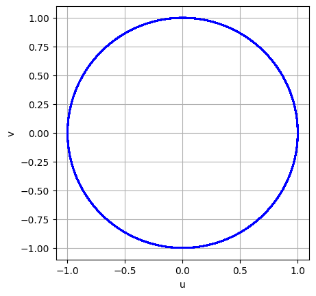

2025-3S 計算数理演習（東京大学理学部・教養学部） [齊藤宣一] [top] [0] [1] [2] [3] [4] [5] [6] [7] [8] [UTOL]
本節で説明する計算手法は，scipyモジュールの scipy.integrate.odeint や scipy.integrate.solve_ivp などにより，ブラックボックス的に利用できてしまう．しかし，本節では，前節に作ったプログラム（を若干修正して）利用する．
ある地域に二種の生物が生息していて，二種のうち一種は，他方の種の餌となる場合を考える．このとき， 餌と捕食者の個体群密度 $u(t)$，$v(t)$ の変化を記述する数理モデルとして連立微分方程式 \begin{align*} \frac{du}{dt}&=au-buv,\\ \frac{dv}{dt}&=cuv-dv \end{align*} が知られている．$a,b,c,d$ は正の定数である． これは，Lotka--Volterraの捕食者被食者モデルと呼ばれる数理モデルである．
Lotka--Volterraモデルを実際に計算してみよう．
なお，解法としては，本節を通じて，特に断らない場合には，古典的Runge--Kutta法を用いる．ただし，プログラミングにおいて，前節（5. 常微分方程式の初期値問題（基礎編））で説明した方針をいくつか修正する．まず，時間区間の分割数 $N$ を指定して，刻み幅を，$h=(T-t_0)/N$ と設定していたが，これは，$T$ をいろいろと変える際に不便なので，刻み幅 $h$ を直接入力するように変更する．その上で，時間に関する更新は，while文を用いて，$t_n=t_{n-1}+h\le T$ となるまで繰り返し行う．分割数 $N$ を指定する場合には，$U_0,U_1,\ldots,U_N$ の値を格納する配列 $\mathrm{u}$ の次元は，あらかじめわかっていたため，繰り返し計算をする前に，（$0$ベクトルとして）定義できた． 今回，$N$ は，与えられた $t_0,T,h$ を用いて，$t_N=t_0+Nh\le T$ を満たす最小の正の整数 $N$ として定義される． このようにして $N$ を計算して，同じようにしても良い．しかし， 修正版では，$N$ をあらかじめ求めず， $U_n$ から $U_{n+1}$ を算出したあとで，すでに得られている $\mathrm{u}=(U_0,\ldots,U_{n})$ に，vstack を用いて $U_{n+1}$ を追加して，$\mathrm{u}=(U_0,\ldots,U_n,U_{n+1})$ とする． $t_0,t_1,\ldots,t_N$ の値を格納する配列 $t$ についても同様である．
In [1]: import numpy as np import matplotlib.pyplot as plt
In [2]:
def rk4vec(odefunc, t0, T, initial, h):
# if h>0, T must be > t0; if h<0, T must be < t0
n=0
unow=initial
tnow=t0
u=unow
t=tnow
while (T-t0)*(T-tnow-h) >= 0.0:
k1 = odefunc(tnow, unow)
k2 = odefunc(tnow+h/2, unow+(h/2)*k1)
k3 = odefunc(tnow+h/2, unow+(h/2)*k2)
k4 = odefunc(tnow+h, unow+h*k3)
unow = unow + (h/6)*(k1 + 2*k2 + 2*k3 + k4)
n += 1
tnow = t0+n*h
u = np.vstack((u, unow))
t = np.append(t, tnow)
return t, u
$\mathrm{tnow} = \mathrm{tnow}+\mathrm{h}$ とせずに，（わざわざ $\mathrm{n}$ を導入して） $\mathrm{tnow} = \mathrm{t0}+\mathrm{n*h}$ としているのは，$T$ が十分大きく，$h$ が十分小さい場合に，丸め誤差の蓄積を防ぐためである．
また，while文の条件部分において， $\mathrm{(T-t0)*(T-tnow-h)}\ge 0$ と書いているのは，$T>t_0$ である限りは， $\mathrm{tnow+h}\le \mathrm{T}$ と同じである． しかし，今後，微分方程式を， $t=t_0$ を初期時刻として，$T < t_0$ なる $T$ まで，時間逆向きに解くことに備えているのである． この場合には，刻み幅は $h < 0$ を与えることになり，反復の条件は， $\mathrm{tnow+h}\ge \mathrm{T}$ となる．これも， $\mathrm{(T-t0)*(T-tnow-h)}\ge 0$ と書ける．
それでは，$a=b=c=d=1$ の場合に，Lotka--Volterraモデルを実際に計算してみよう．
In [3]:
def LotVol(t, u):
a=1.0
b=1.0
c=1.0
d=1.0
return np.array([a*u[0]-b*u[0]*u[1],c*u[0]*u[1]-d*u[1]])
t0=0.0
T=20.0
u0=np.array([0.5,0.8])
h=0.01
t, u = rk4vec(LotVol, t0, T, u0, h)
plt.plot(t,u[:,0], color='#00bfff')
plt.plot(t,u[:,1], color='#ff8c00')
plt.xlabel('t')
plt.legend(['u','v'])
plt.grid('on')
plt.show()
初期値を $(0.5,0.8)$ として，$0\le t\le T=20$，$h=0.01$ で，Lotka--Volterraモデルを計算した結果が，Out [3]である．もちろん，$h$ の値をいくつか変えて結果を検討した上で，計算結果として採用すること．
この結果をみると，$u$ と $v$ は，相互に影響を与えながら，ともに周期的に変化しているように見える．この事実をより端的に観察するために，$uv$ 平面に，相図を書いてみよう．すなわち， $t$ をパラメータだと考え，曲線 $(u(t),v(t))$ をプロットする．
In [4]:
def LotVol(t, u):
a=1.0
b=1.0
c=1.0
d=1.0
return np.array([a*u[0]-b*u[0]*u[1],c*u[0]*u[1]-d*u[1]])
t0=0.0
T=10.0
u0=np.array([0.5,0.8])
h=0.01
t, u = rk4vec(LotVol, t0, T, u0, h)
plt.plot(u[:,0],u[:,1],'b')
plt.xlabel('u')
plt.ylabel('v')
plt.grid('on')
plt.gca().set_aspect('equal', adjustable='box')
plt.show()
はじめは，餌 $u$ があまりなく捕食者 $v$ の数は減少する．それにより餌が増加するが，そのために，捕食者も増加する．すると，次には，餌が減少し$\cdots$，という状態が繰り返されていることがわかる．（この図は，時間に関して反時計回りの軌道となっていることに注意せよ．）
なお，固定された $h$ に対して，$T$ を大きくしてくと，いずれは，周期軌道を再現できなくなる（各自試してみよ ）．これが，誤差の蓄積による計算上の問題なのか，それとも，数学的な事実なのか（すなわち，微分方程式の解が本当にそうなっているのか）は，数学的な考察によって検討しなければならない．今の場合は， $u$ と $v$ は時間周期的になることが，数学的に証明できるので，周期軌道の破綻は，計算誤差によるものである．
上では，初期値を $(0.5,0.8)$ としていたが，In [5] では，$c\ge 0$ と $L > 0$ を指定して， 左下の端点が $(c,c)$，一辺の長さが $L$ の正方形から，number個の初期値をランダムに選ぶ．
In [5]:
def LotVol(t, u):
a=1.0
b=1.0
c=1.0
d=1.0
return np.array([a*u[0]-b*u[0]*u[1],c*u[0]*u[1]-d*u[1]])
t0=0.0
T=10.0
h=0.01
number=10
c=np.array([0,0])
length=1
for i in range(number):
u0=c+length*np.random.rand(2)
t, u = rk4vec(LotVol, t0, T, u0, h)
plt.plot(u[:,0],u[:,1])
plt.xlabel('u')
plt.ylabel('v')
plt.grid('on')
plt.gca().set_aspect('equal', adjustable='box')
plt.show()
図7.3より，$(1,1)$ が特別な点であることが予想される．実際，$(1,1)$ は， $a=b=c=d=1$ の際の，Lotka--Volterraモデルの平衡点（中立安定な平衡点）である．
I. Newtonが導いた惑星運動の方程式を現代的に書くと， \begin{align*} -M_P\frac{d^2}{dt^2}x(t)&=GM_SM_P\frac{x(t)}{r(t)^3},\\ -M_P\frac{d^2}{dt^2}y(t)&=GM_SM_P\frac{y(t)}{r(t)^3} \end{align*} となる．$G$ は万有引力定数，$M_P$ は考察している惑星の質量， $M_S$ は太陽の質量，$(x(t),y(t))$ は時刻 $t$ での（$xy$ 平面における）惑星の位置， $r(t)=\sqrt{x(t)^2+y(t)^2}$ は惑星と太陽の距離を表す．ただし，$M_P/M_S$ は非常 に小さいことを仮定し，惑星運動が平面運動であることは考慮済みである． これを簡略化した \begin{align*} \frac{d^2x(t)}{dt^2}&=-\frac{x(t)}{R(t)},\\ \frac{d^2y(t)}{dt^2}&=-\frac{y(t)}{R(t)} \end{align*} を考える．ただし，$R(t)=[x(t)^2+y(t)^2]^{3/2}$ である． パラメータ$0\le k< 1$を使って，初期条件を \[ x(0)=1-k,\quad \frac{dx}{dt}(0)=0,\quad y(0)=0,\quad \frac{dy}{dt}(0)=\left(\frac{1+k}{1-k}\right)^\frac12 \] と定めると，解は周期 $2\pi$ で周期的になる．なお，$(x(t),y(t))$ は，離心率が $k$ で，焦点の一つに原点を持つ楕円を描く．この方程式は， \[ u_1(t)=x(t),\quad u_2(t)=y(t),\quad u_3(t)=\frac{dx(t)}{dt},\quad u_4(t)=\frac{dy(t)}{dt} \] とおくことで， \begin{align*} \frac{du_1(t)}{dt}&= \frac{dx(t)}{dt}=u_3(t)\\ \frac{du_2(t)}{dt}&= \frac{dy(t)}{dt}=u_4(t)\\ \frac{du_3(t)}{dt}&= \frac{d^2x(t)}{dt^2}=-\frac{x(t)}{R(t)}=-\frac{u_1(t)}{R(t)}\\ \frac{du_4(t)}{dt}&= \frac{d^2y(t)}{dt^2}=-\frac{y(t)}{R(t)}=-\frac{u_2(t)}{R(t)} \end{align*} と書き直せる．
In [6]:
def planet(t,u):
R=(u[0]**2+u[1]**2)**(3/2)
return np.array([u[2],u[3],-u[0]/R,-u[1]/R])
t0=0.0
T=2*np.pi
k=0.8
u0=np.array([1-k, 0, 0, np.sqrt((1+k)/(1-k))])
h=0.001
t, u = rk4vec(planet, t0, T, u0, h)
plt.plot(u[:,0],u[:,1],'b')
plt.xlabel('x')
plt.ylabel('y')
plt.grid('on')
plt.gca().set_aspect('equal', adjustable='box')
plt.show()
|  |  |
|---|
図7.5のように，$T$ に対して，$h$ が大きいと，周期軌道を再現できなくなる．これも，計算誤差によるものである．
次の方程式系はLorenz系と呼ばれ，解がカオス的挙動を示す非線形常微分方程式として有名である： \begin{align*} \frac{dx}{dt} &= -ax+by\\ \frac{dy}{dt} &= -xz+cx-y\\ \frac{dz}{dt} &= xy-bz. \end{align*} 可視化の例として，$a=10, b=8/3, c=28$ の場合の解を，$xyz$ 空間に描画する．
In [7]:
from mpl_toolkits.mplot3d import Axes3D
def Lorenz(t, u):
a=10
b=8/3
c=28
return np.array([a*(u[1]-u[0]), u[0]*(c-u[2])-u[1], u[0]*u[1]-b*u[2]])
t0=0.0
T=20.0
fig = plt.figure(figsize = (6,6))
ax = fig.add_subplot(111, projection='3d')
number=10
mag=3.0
h=0.001
for i in range(number):
u0=-mag+2*mag*np.random.rand(3)
t, u = rk4vec(Lorenz, t0, T, u0, h)
ax.plot(u[:,0],u[:,1],u[:,2])
ax.set_xlabel('x')
ax.set_ylabel('y')
ax.set_zlabel('z')
ax.view_init(azim=-60)
plt.show()
$A\in\mathbb{R}^{2\times 2}$ に対して，線形の連立微分方程式 \begin{equation} \tag{$*$} \frac{d}{dt}\boldsymbol{u}(t)=A\boldsymbol{{u}(t)} \end{equation} を考える．複数の初期値 $(a_1,a_2)$ を取り，$0\le t\le T$ の範囲で $(u(t),v(t))$ を描画する．また，$-T\le t\le 0$ の範囲でも描画する（このとき，rk4vecには，刻み幅として $-h$ を与える）． $A$を， \[ A_1=\begin{pmatrix} 3&-1 \\ -1&2 \end{pmatrix} ,\qquad A_2=\begin{pmatrix} 2&3 \\ 3&-1 \end{pmatrix} \] としたときの結果が図7.7である．$h=0.01$，$T=3$，$t_0=0$ としている． $t>0$ をオレンジで， $t<0$ をシアンで，描画しているので，シアンからオレンジの向きが，時間が正の向きである．
$(u(t),v(t))=(0,0)$ は，時間に依存しない点であり，常に($*$)を満たす．これを，原点 $\mathrm{O}$ は($*$)の平衡点であると言う． val, evect = np.linalg.eig(A) 使って固有値を計算すると， $A_1$ の固有値（の近似値）は $3.62$ と $1.38$ であり，$A_2$ の固有値は $3.85$ と $-2.85$ である．$A_1$ のように，固有値が2つとも正の実数のとき，原点 $\mathrm{O}$ は不安定結節点であると言う．また，$A_2$ のように，固有値が符号の異なる実数のとき，$\mathrm{O}$ は鞍点であると言う．
In [8]:
def linsys(t,u):
A=np.array([[3,-1], [-1,2]])
# A=np.array([[2,3], [3,-1]])
return np.dot(A,u)
t0=0.0
T=3.0
length=1
number=50
h=0.01
for i in range(number):
u0=-length + 2*length*np.random.rand(2)
# t>0 オレンジ
t, u = rk4vec(linsys, t0, T, u0, h)
plt.plot(u[:,0],u[:,1],color='#ff8c00')
# t<0 シアン
t, u = rk4vec(linsys, t0, -T, u0, -h)
plt.plot(u[:,0],u[:,1],color='#00bfff')
plt.xlabel('x')
plt.ylabel('y')
plt.grid('on')
plt.xlim(-3*length,3*length)
plt.ylim(-3*length,3*length)
plt.gca().set_aspect('equal', adjustable='box')
plt.show()
|  |  |
|---|
ある孤立した地域，例えば，外界からは（ほとんど）隔離された全寮制の学校を考えよう． 生徒の一部がインフルエンザに感染した．インフルエンザの感染の広がりを一つの力学系と考え，それを記述する数理モデルを考える．
$S(t)$を，時刻 $t$ における感受（susceptible）性人口サイズ，すなわち，インフルエンザに感染する可能性のある個人の数（密度）としよう．一方で，感染（infected）人口サイズ，すなわち，インフルエンザに感染している個人の数を $I(t)$ とする．インフルエンザから回復（recovered）した個体は，免疫を獲得すると仮定する．その個体数を $R(t)$ として，一度，回復した人は，再度感染はしないものとする．
これらの関係を記述する数理モデルとして最も基本的なのは，次の Kermarck--McKendrickモデル，あるいは，SIRモデルである： \begin{align*} \frac{dS}{dt} &= -\sigma SI\\ \frac{dI}{dt} &= \sigma SI-\rho I\\ \frac{dR}{dt} &= \rho I. \end{align*} $\sigma$ は感染者個体から感受性個体への病気の伝染しやすさを表す感染係数， $\rho$ は回復（免疫獲得）率を表す．ともに，正の定数と仮定する．初期値は， $S(0)>0$， $I(0)>0$， $R(0)=0$ とする． $\frac{d}{dt}(S+I+R)=0$ なので，考えている集団の総個体数は保存される．
以下，$\sigma=0.1$，$\rho=1$ とする．
In [9]:
def KerMcK(t, u):
sigma=0.1
rho=1.0
return np.array([-sigma*u[0]*u[1],sigma*u[0]*u[1]-rho*u[1],rho*u[1]])
t0=0.0
T=20.0
u0=np.array([40.0,3.0,0.0]) # 初期値 [S(0), I(0), R(0)]
h=0.01
t, u = rk4vec(KerMcK, t0, T, u0, h)
plt.subplot(2, 1, 1)
plt.plot(t,u[:,0],'b')
plt.plot(t,u[:,1],'r')
plt.plot(t,u[:,2],'c')
plt.xlabel('t')
plt.legend(['S','I','R'])
plt.grid('on')
plt.subplot(2, 1, 2)
plt.plot(u[:,0],u[:,1],'b')
plt.xlabel('S')
plt.ylabel('I')
plt.grid('on')
plt.tight_layout()
plt.show()
$T=20$，$h=0.01$ として計算を実行した．図7.8の上図は，$S(0)=40$，$I(0)=3$ のときである．この場合，感染流行初期において感染者数は増加し，（ほとんど全ての個体が）免疫獲得者へ移行し，感染は終息する．一方で，$I(0)=3$ のままで，$S(0)=9$ の場合を考えると，感染者数の割合が多いので，感染は爆発するように予想されるが，実際には，感染者数は増加せず， 免疫獲得者と感染を逃れた人に別れ，感染は終息する．
この傾向の違いを見極めるために，初期値を $S(0) \in (0,S_{\max})$， $I(0) \in (0,I_{\max})$ の範囲でランダムにとり，相図 $(S,I)$ を描いてみる．
In [10]:
def KerMcK(t, u):
sigma=0.1
rho=1.0
return np.array([-sigma*u[0]*u[1],sigma*u[0]*u[1]-rho*u[1],rho*u[1]])
t0=0.0
T=10.0
Smax=60
Imax=5
number=20
h=0.01
for i in range(number):
u0=np.array([Smax*np.random.rand(),Imax*np.random.rand(),0])
t, u = rk4vec(KerMcK, t0, T, u0, h)
plt.plot(u[:,0],u[:,1])
plt.xlabel('S')
plt.ylabel('I')
plt.grid('on')
plt.show()
図7.10は，$S_{\max}=60$，$I_{\max}=5$のとしたときのものである． 時間正の向きは，反時計回りである． $S=10$ を境に，$I\to 0$ $(t\to \infty)$ という傾向に向かっているように見える． そこで， $S_{\max}=11$，$I_{\max}=5$のときの結果を，図7.11に示した．この時には，いずれの場合も， $I\to 0$ $(t\to \infty)$ となっている．
実は，数学的に以下のことが示されている（[Thi]，[齋藤]）． \[ R_0=\frac{\sigma}{\rho}S(0) \] とおく． $R_0>1$ ならば感染は流行し， $R_0\le 1$ ならば感染は自然消滅する．このような $R_0$ を，基本再生産数（basic reproduction number）と言う（R noughtと読むようです）． いまの場合，$R_0=\frac{1}{10}S(0)$ であり，計算による観察と整合している． ただし，$R_0$ の定義は自明でなく，本格的な数学的な解析を経て到達するものである． Kermarck--McKendrickのSIRモデルは，比較的シンプルなモデルであるが， より複雑なモデルにおいて，実際の観測結果と整合し，かつ数学的にも筋の通った 基本再生産数を妥当に定義することは，感染症の数理を超えて，数理科学の役割として，極めて重要である．
次の連立微分方程式 \begin{align*} \frac{du}{dt}&=-v(t)\\ \frac{dv}{dt}&=u(t) \end{align*} を，初期条件 $u(0)=1$，$v(0)=0$ の下で解いてみよう．
まずは，Heun法を用いる．
In [11]:
def heunvec(odefunc, t0, T, initial, h):
n=0
unow=initial
tnow=t0
u=unow
t=tnow
while tnow + h <= T:
k1 = odefunc(tnow, unow)
k2 = odefunc(tnow+h, unow+h*k1)
unow = unow + (h/2)*(k1 + k2)
n += 1
tnow = t0+n*h
u = np.vstack((u, unow))
t = np.append(t, tnow)
return t, u
In [12]:
def circle(t, u):
return np.array([-u[1],u[0]])
t0=0.0
T=4.0*np.pi
u0=np.array([1.0,0.0])
h=0.1
t, u = heunvec(circle, t0, T, u0, h)
plt.plot(u[:,0],u[:,1],'b')
plt.xlabel('u')
plt.ylabel('v')
plt.grid('on')
plt.gca().set_aspect('equal', adjustable='box')
plt.show()
図7.12の左図は， $h=0.1$とし，$T=2\pi$まで解いた時の $(u(t),v(t))$ の軌跡を $uv$ 平面に描いた ものである．実は，方程式の解は， \begin{equation*} u(t)=\cos t,\quad v(t)=\sin t \end{equation*} であり，$(u(t),v(t))$ は，周期 $2\pi$ の円軌道を描く．実際に，図7.12の左図では，それが正しく再現されている．しかし，もっと長時間にわたって軌道を追跡するとどうなるであろうか．図7.12の右図は，$T=200\pi$ まで解いた結果である．このとき，軌道にはわずかではあるがずれが生じ，結果的に閉じた軌道を描かなくなってしまう．同様の問題が，古典的Runge--Kutta法でも起ることは，惑星運動の方程式の計算の際にも指摘した．
|  |  |
|---|
次に，Euler法を少し修正した次のような解法を 考えてみる： \begin{equation} \tag{$\#$} \begin{array}{l} U_{n+1}=U_{n}-\displaystyle{\frac{h}{2}}(V_{n+1}+V_n)\\[1mm] V_{n+1}=V_{n}+\displaystyle{\frac{h}{2}}(U_{n+1}+U_n). \end{array} \end{equation} ここで，$U_n\approx u(t_n)$，$V_n\approx v(t_n)$ であり，$U_0=1$，$V_0=0$とする． 実際，Euler法では，第1の方程式は，$U_{n+1}=U_n-hV_n$となるはずだが， この右辺第2項目の$V_n$を，$V_{n+1}$と$V_n$の平均で置き換えている． これを，Crank--Nicolson法，あるいは，台形法 と呼ぶ．($\#$)は， \begin{equation} \tag{$\#\#$} \begin{pmatrix} U_{n+1}\\V_{n+1} \end{pmatrix} = \frac{1}{1+c^2} \begin{pmatrix} 1-c^2 & -2c \\ 2c & 1-c^2 \end{pmatrix} \begin{pmatrix} U_n \\ V_n \end{pmatrix} \end{equation} と書けるので，簡単に計算ができる．ただし，$c=h/2$ と置いている．
In [13]:
def CrankNicolson(odefunc, t0, T, initial, h):
c=h/2.0
A=(1/(1+c**2))*np.array([[1-c**2,-2*c],[2*c,1-c**2]])
n=0
unow=initial
tnow=t0
u=unow
t=tnow
while tnow + h <= T:
n += 1
tnow = n*h
unow = np.dot(A,unow)
u = np.vstack((u, unow))
t = np.append(t, tnow)
return t, u
In [14]:
def circle(t, u):
return np.array([-u[1],u[0]])
t0=0.0
T=400.0*np.pi
u0=np.array([1.0,0.0])
h=0.1
t, u = CrankNicolson(circle, t0, T, u0, h)
plt.plot(u[:,0],u[:,1],'b')
plt.xlabel('u')
plt.ylabel('v')
plt.grid('on')
plt.gca().set_aspect('equal', adjustable='box')
plt.show()
この方法による計算結果を，図7.13に示す．今度は，$T=200\pi$ ばかりか，その倍の $T=400\pi$ まで，円軌道を再現できている．
|  |  |
|---|
これらの方法にどのような違いがあるのだろうか？まずは，精度を比較してみよう．図7.14に， 誤差を比較した結果を示す（計算の仕方はあとで述べる）．この図より，これらの方法はともに2次精度であることがわかる．
実は，これら2つの方法の違いを明確にするためには，方程式の解$u(t)$，$v(t)$の持つ性質に着目しなければならない．実際， \[ R(t)=u(t)^2+v(t)^2 \] とおくとき， \[ \frac{d}{dt}R(t)=2u(t)\frac{du(t)}{dt}+2v(t)\frac{d v(t)}{dt}=-2u(t)v(t)+2u(t)v(t)=0 \] なので，$R(t)$ は $t$ によらず定数，特に， \begin{equation*} R(t)=R(0)\quad (t>0) \end{equation*} となる．すなわち，$R(t)$は，方程式の解の保存量である （このことは，わざわざ微分をしなくても，よく知られる三角関数の公式からすぐにわかるが，あえて，計算した）．したがって，$R(t)$ の離散版として， \begin{equation*} R_n=U_n^2+V_n^2 \end{equation*} を導入するのは自然であろう．ここで，$U_n$，$V_n$ をCrank--Nicolson法の解とすると， \begin{align*} R_{n+1}-R_n &=(U_{n+1}-U_n)(U_{n+1}+U_n)+(V_{n+1}-V_n)(V_{n+1}+V_n)\\ & = -\frac{h}{2}(V_{n+1}+V_n)(U_{n+1}+U_n) +\frac{h}{2}(U_{n+1}+U_n)(V_{n+1}+V_n)\\ &=0 \end{align*} より \begin{equation*} R_n=R_{n-1}=\cdots=R_0=R(0) \end{equation*} という性質が導かれる．これを，離散的な保存則ということがある．結果的に，クランク・ニコルソン法は，2次精度を持ち，かつ任意の $h>0$ に対して，常に円軌道を描くことが保証される．一方で，Euler法，Heun法，古典的なRunge--Kutta法は，このような保存則を持たないため，$h$ を十分小さくしたときに，解に十分近いことは保証されるが，それ以上のことは直ちには期待できない． このように，微分方程式の解の持つ性質（$=$構造）を，離散的にも再現する数値解法を，構造保存型の数値解法と呼ぶ．その利点は，明らかであろう．
興味のある人は，[松尾]，[松尾・宮武]，[剱持]などを参照せよ．
補足（ベクトル値の場合の誤差の観察方法） まず，$\mathbb{R}^m$ のノルムを復習する． すなわち，$1\le p<\infty$ と $\boldsymbol{x}=(x_1,\ldots,x_m)$ に対して， $\|\boldsymbol{x}\|_p=\left(\sum_{i=1}^m |x_i|^p\right)^{1/p}$ を $\boldsymbol{x}$ の $p$ ノルム，$\|\boldsymbol{x}\|_\infty=\max_{1\le i\le m}|x_i|$ を $\boldsymbol{x}$ の $\infty$ ノルムと言う．
連立微分方程式の解 $\boldsymbol{u}(t)$ とその数値解 $\boldsymbol{U}_n$ の誤差は， $1\le p\le \infty$ に対して，$p$ ノルムを用いて， \[ \mathcal{E}_{h,p}\stackrel{\textrm{def.}}{=} \max_{0\le n\le N}\|\boldsymbol{u}(t_n)-\boldsymbol{U}_n\|_p \] で定められる．実は，$\mathbb{R}^m$ において，任意のノルムは同値となる（[齊藤2012]の命題3.1.7など）ので，誤差を観察するためには，計算しやすいノルムを選んでも良い．したがって， \[ \mathcal{E}_{h}\stackrel{\textrm{def.}}{=}\mathcal{E}_{h,\infty}= \max_{0\le n\le N}\|\boldsymbol{u}(t_n)-\boldsymbol{U}_n\|_\infty =\max_{0\le n\le N}\max_{1\le i\le m}|u_i(t_n)-U_{n,i}| \] を採用するのが便利である． ただし，$\boldsymbol{u}(t)=(u_1(t),\ldots,u_m(t))$， $\boldsymbol{U}_n=(U_{n,1},\ldots,U_{n,m})$ と書いている． 以上のことに留意して，前回の OderError を，以下の OderError2 のように修正して，誤差を観察すれば良い．実際，Out [16]が，図7.14である．$\blacksquare$
In [15]:
def OderError2(Solver, odefunc, odeexact, t0, T, initial):
h=0.1
kmax=5
hv=np.zeros(kmax)
ev=np.zeros(kmax)
for k in range(kmax):
t, u = Solver(circle, t0, T, initial, h)
exact=odeexact(t)
error=np.abs(u-exact.T)
ev[k] = np.max(error)
hv[k] = h
h = h/2
rate=(np.log(ev[1:]) - np.log(ev[:-1])) / (np.log(hv[1:]) - np.log(hv[:-1]))
return hv, ev, rate
In [16]:
def circle(t, u):
return np.array([-u[1],u[0]])
def circle_sol(t):
return np.array([np.cos(t),np.sin(t)])
t0=0.0
T=4.0*np.pi
u0=np.array([1.0,0.0])
h1, ev1, rate1= OderError2(heunvec, circle, circle_sol, t0, T, u0)
h2, ev2, rate2= OderError2(CrankNicolson, circle, circle_sol, t0, T, u0)
#収束の速さの出力
for i in range(h1.shape[0]-1):
print(f'{h1[i+1]:.3f}, {rate1[i]:.3f}, {rate2[i]:.3f}')
#結果の描画（両対数目盛）
plt.plot(h1, ev1, 'bo-')
plt.plot(h2, ev2, 'ro-')
plt.xscale('log')
plt.yscale('log')
plt.legend(['Heun','Crank-Nicolson'])
plt.xlabel('h')
plt.ylabel('error')
plt.grid('on')
plt.gca().set_aspect('equal', adjustable='box')
plt.show()
Kermarck--McKendrickのSIRモデルに，人口動態を考慮した項を付け加えた修正モデルを考える（[齋藤]，[齋藤・佐藤・瀬野] ）： \begin{align*} \frac{dS}{dt} &= a -\sigma SI - \mu S\\ \frac{dI}{dt} &= \sigma SI-\rho I-\mu I\\ \frac{dR}{dt} &= \rho I-\mu R. \end{align*} ここで，$a$ は出生や移住（移入）による人口の増加率， $\mu$ は死亡や移住（移出）による人口の減少率を表す．ともに，正の定数とする． まず，計算の前に，$(a/\mu,0,0)$ が平衡点であること，さらに， \[ r=\frac{a\sigma}{\mu(\rho+\mu)}>1 \] のとき，もう一つ平衡点があることを（数学的に）確かめよ．その上で， $\rho=1$，$\sigma=\mu=0.1$ として，$a$ を自分で設定して， さまざまな初期値で数値計算を実行し，$(S,I,R)$ の時間変化を調査せよ．特に，$r>1$ と $r\le 1$ で傾向の違いを調査せよ．
惑星運動の方程式を，前回説明したRKF45公式で解いて，計算時間や精度について， 古典的Runge--Kutta法と比較せよ．